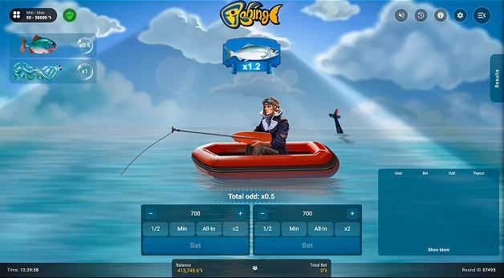
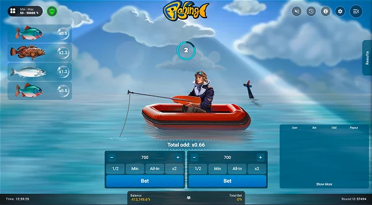

← Crash / Instant11 / 11
Pascal Gaming · Instant
Fishing

Visual world
A day on the water
A small boat, clear blue water, and illustrated fish create a relaxed, readable fishing scene.
A team-delivered Pascal Gaming project, presented as part of my game art and production portfolio.
